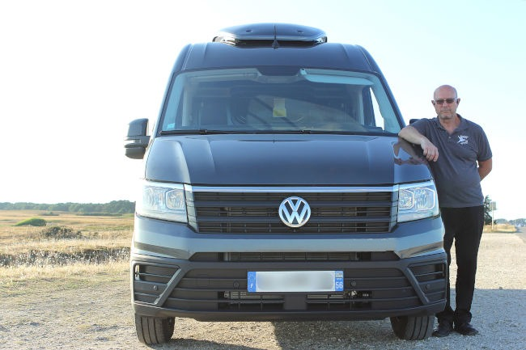

Jean-Marie CROCQ
Qui suis-je ?
Après 22 ans au sein des Sapeurs-Pompiers de Paris, j’ai acquis des compétences qui font ma force. Le sens du devoir et l’urgence ont toujours été au cœur de ma mission, mais au fil du temps, une autre réalité s’est imposée à moi : la fragilité de la vie et de la nécessité d’accompagner les familles dans ces moments difficiles.
La transition vers le monde funéraire a été motivée par la désir profond de continuer à apporter du réconfort et du soutien, même dans des circonstances différentes. Les compétences acquises en tant que pompier, telles que la gestion du stress, la compassion et la capacité à travailler dans des situations délicates, se sont avérées être des atouts précieux dans ce nouveau chapitre.
C’est un voyage où la dévotion à la vie s’étend au-delà de ces moments les plus critiques, pour englober également ceux où la vie laisse place à la sérénité éternelle.

Implanté dans le Morbihan depuis plus de 10 ans, mon entreprise offre ses services de thanatopraxie et de transports funéraires auprès des Pompes Funèbres ainsi que des familles. Le siège social de l’entreprise se situe à Ploemel.
J’assure les soins de conservation et les toilettes funéraires dans le plus grand respect du défunt.
Avec mon équipe nous assurons le transport avant et après mise en bière dans toute la France 24h/24 et 7j/7, en collaboration avec les Pompes Funèbres.
